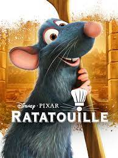

Ratatouille is a 2007 American computer-animated comedy film produced by Pixar and released by Walt
Disney Pictures. It is about a highly intelligent and idealistic young rat named Remy with unusually
acute senses of taste and smell who dreams of becoming a chef like his idol, the late Auguste Gusteau.
However, the rest of his rat colony, including his brother Emile and his father and clan leader Django,
are interested in food only for sustenance. One day, while scavenging the house of an elderly woman for
ingredients, Remy accidentally reveals the presence of the colony, forcing them to flee, and Remy is
separated from the clan. He winds up in the sewers and, encouraged by his own imaginative interpretation
of Gusteau, he eventually finds himself above the kitchen of Gusteau's Restaurant in Paris.
When Remy notices the restaurant's new garbage boy, Alfredo Linguini, attempt to fix a soup he has ruined,
he jumps in and fixes his mistakes. Linguini catches him in the act but does not reveal him to Skinner,
Gusteau's former sous-chef and the new owner of the restaurant. Skinner confronts Linguini for tampering
with the soup, but when the soup is accidentally served and proves to be a success, Colette Tatou, the
restaurant's only female chef, convinces Skinner to retain Linguini to enhance the restaurant's reputation.
Skinner spots Remy trying to escape and orders Linguini to take him outside and kill him, but Linguini
discovers Remy can understand him, and thus decides to keep him instead.
Linguini must replicate the soup in order to keep his job, and he succeeds, thanks to Remy. Back in Linguini's
apartment, the two learn to communicate and devise a plan: Remy hides under Linguini's toque at the restaurant
and guides his movements like a marionette by pulling on his hair. Colette begins Linguini's training in the kitchen,
begrudgingly at first, but comes to appreciate someone heeding her professional advice.

Remy finds documents indicating that Linguini is Gusteau's illegitimate son and rightful owner of the restaurant; after
a lengthy chase around Paris, he gives them to Linguini, who forces Skinner out. The restaurant thrives as Remy's recipes
become popular, though as Linguini's life improves and his relationship with Colette develops, Remy begins to feel left
out and unappreciated. He reunites with Emile and the clan but is rejected by Django over his admiration for humans.
Meanwhile, Anton Ego, a food critic whose negative review of the restaurant indirectly led to Gusteau's death, announces
he will dine at the restaurant after learning of its rising success. After an argument with Linguini, Remy leads his clan
to raid the restaurant's pantries in revenge, but Linguini drives them out. Remy is captured by Skinner, who intends to
use his talents to create a line of frozen food products, but is promptly freed by Django and Emile. Linguini reconciles
with Remy and reveals the truth to his staff, who all walk out, feeling disappointed and betrayed. However, Colette returns,
citing her belief in Gusteau's motto, "Anyone can cook."
Impressed by Remy's determination, Django and the clan offer to help, and cook under Remy's direction while Linguini waits
tables. Skinner and a health inspector attempt to interfere, but are bound and gagged. Remy creates a variation of ratatouille
which reminds Ego of his mother's cooking. Humbled and delighted by the dish, Ego asks to meet the chef but must wait until the
restaurant is empty, before being introduced to Remy. Ego is stunned, but writes a glowing review, having come to understand
Gusteau's motto, and calling Remy "nothing less than the finest chef in France."
Skinner and the health inspector are eventually let go, and despite the positive review, the restaurant is shut down due to
health concerns, causing Ego to lose his job and credibility as a critic. However, he now owns and frequents a popular new small
bistro, La Ratatouille, operated by Remy, Linguini, and Colette, as the rat colony settles into their new home in the bistro's attic.